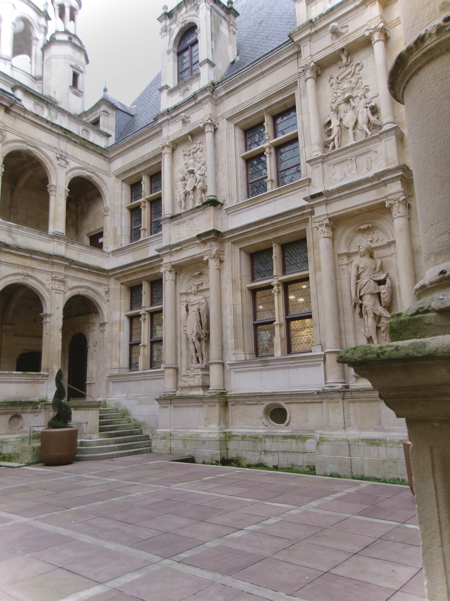

FRANCE
Bia Mahamat
Caen | Normandy
Caen’s streets feel warm and lived-in. Stone buildings with centuries-old facades stand next to cafés, bookstores, and bakeries. There's always a vendor preparing something fragrant at the market. Normandy’s culinary identity is everywhere—apples, cider, buttery pastries, and cheeses that tempt you at every turn. Caen may be anchored in the past, but its present-day energy is unmistakably vibrant.
Architecture & Atmosphere
The city’s architecture is decorated with charming squares, stone buildings, and medieval structures. Despite the urban size, Caen’s outdoor markets and attractions give it a lively, small-town feel. The mixture of medieval and modern architecture makes it visually diverse.
Historical & Cultural Significance
The city played a major role in the Battle of Normandy during World War II. This makes it a central location for both reflection and remembrance. The Mémorial de Caen is one of the region’s most significant museums, as it is dedicated to many of the conflicts of the 20th century. Caen is also closely tied in relation to William the Conqueror, who established many of the city’s iconic landmarks. This includes the Château de Caen, one of the largest medieval fortresses in western Europe. The Abbaye aux Dames is another landmark, a historically significant church also serving as his final resting place.
Chasseneuil-sur-Bonnieure | Angoulême
Angoulême, a small but bustling city, is known for its historic architecture, much like other
regions. It is known for its Romanesque churches, and beautiful stone buildings overlooking the
Charente River Valley. This region is also known for its longstanding history with printing and
the arts. Angoulême is famous for its International Comic Festival, where murals and comic art
are displayed on various buildings.
The region around Chasseneuil-sur-Bonnieure, just north of Angoulême, feels like stepping into
a postcard version of the French countryside. Just a short drive away, life moves gently here.
Streets curve around stone houses with pale shutters, and mornings begin with locals walking to
the bakery for fresh baguettes while the scent of warm dough spills into the street. Chasseneuil
itself is the embodiment of charming village life–quiet streets, local bakeries, small shops, and
homes adorned with classic French façades. The markets often feature fresh produce, pastries,
breads, and regional specialties.
Paris
Paris–the capital of France–needs no formal introduction. Street life is very prominent in the rues of Paris. Street vendors are everywhere, selling everything– crepes, artwork, souvenirs, and more. These small details bring Paris to life. The moment you walk out into the streets, everything becomes richer, louder, softer, brighter, and more alive than expected. The sound of scooters weaving through traffic mixes with the hum of conversations floating out of tiny bistros.
The Seine
The Seine river is a defining feature of the city. Many tourists enjoy walking along the riverbanks, watching boats pass. At certain times, there are small boats accessible to tourists for a price. The great Notre-Dame can be seen from the river. From another direction the Eiffel Tower is also within visibility. The culture and architecture of Paris is rich and never-ending, but the Hassmann-style avenues, bridges, and buildings must be highlighted and brought to attention. Booksellers set up their green stalls along the riverbanks, each box full of used books, vintage posters, postcards, and old maps. It’s impossible not to stop and browse. At one corner, a community library sits, accumulating different stories.
Some of the best moments aren’t on the postcard landmarks—they're in the everyday scenes: a painter selling watercolors and live portraits along the Seine, a street musician playing violin on a bridge, a tiny neighborhood market with locals selecting fruit and flowers. Paris is full of these small, fleeting scenes that remind you why people fall in love with the city again and again.
Bailey-Romainvilliers
Just a short drive away from Paris, Bailey-Romainvilliers offers a completely different side of France. While home to the excitement of Disneyland, it is also quiet, welcoming, and local. The town itself is neat and modern. Tidy homes are displayed, with tree lined sidewalks and small parks. But what really makes Bailly-Romainvilliers special are its local spots—the businesses that become part of daily routine.
One of the favorites is Napolitan, a charming pizza restaurant known among locals for its cozy atmosphere and delicious food. It is reliable, and often full on weekends with hungry customers and lively staff. Another must-stop is Colitux, which is just next door from Napolitan. It is a stylish shop offering decor, home goods, and trinkets that serve as great souvenirs. Though not a traditional gift shop, many hidden gems can be found in this modern French style shop.
Bailly-Romainvilliers is the kind of ville that sticks with you because of its simplicity. It’s a calm contrast to the fast-paced energy of Paris–close enough to the city for easy access, but far enough away to feel like its own calm world. Walking through the town feels like discovering the everyday heartbeat of authentic French life.